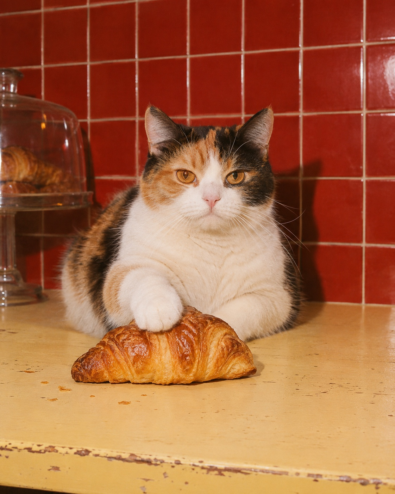

Help
Turn one photo into a guessing game for a friend, or print a picture receipt for the mood you’re in.

Make your first piece
Choose a game
In Discover (发现), open 抓包倒带 for a reveal or 情绪小票 for a mood receipt. Tap 做同款 to begin.
Pick your picture
Choose your own photo or try the sample. The reveal also takes a short video. Tap a spot in the picture to choose what your friend sees first.
Send it
Tap 冲印短片 to make a video or 打印小票 to print the receipt. Tap 发给朋友 on the result and choose a recipient app, or save it to Files.
Common questions
Why can’t I use this video?
The reveal accepts readable clips up to one minute long and 120 MB in size. Trim a longer clip in Photos first. The receipt uses a still photo.
Can I share without allowing access to save to Photos?
Yes. Tap 发给朋友 on the result to share the MP4 or PNG. To save to Photos, open 我的 → 照片权限 → 打开系统设置 and allow ShotGrove to add photos.
How do I save a post for later?
Share its link to ShotGrove and tap 保存链接. In 创作 → 收藏的链接, open it and choose a game. You can also paste its address using 导入链接.
What happens if I cancel an export?
取消生成 takes you back to the editor with your material. Change your clue, mood or caption and try again. 项目 holds drafts with material and finished work.
How do I delete my work?
Delete an individual piece in 项目. 我的 → 清空本地数据 clears drafts, finished projects, favorites and reference links inside ShotGrove. Manage any copies saved to Photos or Files in those apps.
Contact the developer
You can email us about a problem or privacy request. Tell us which game you were using and what happened.
vokie123@gmail.com